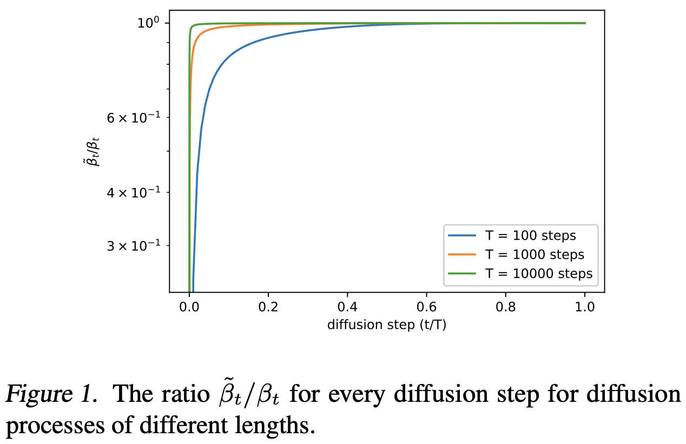
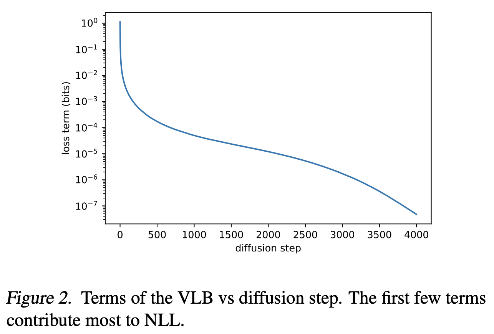
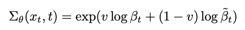
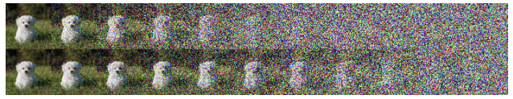
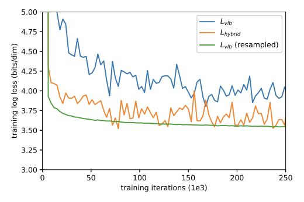

Information
Title: Improved Denoising Diffusion Probabilistic Models (CVPR 2021)
Reference
Author: Seunghwan Ji
Last updated on Aug. 6, 2023
I-DDPM#
Abstract#
DDPM을 약간 수정함으로써 High Quality를 유지하고, Log Likelihood수치도 개선할 수 있는 향상된 모델을 제안
Sampling시 Base 보다 더 적은 Step으로 비슷한 퀄리티의 결과를 낼 수 있는 방법을 제안
Model의 Scale과 Diffusion Step에 따른 Sample Quailty와 Likelihood 수치간의 관계를 연구
1. Introduction#
최근 DDPM(Ho et al.) 모델은 Generate 분야에서 High Quality의 이미지를 생성해내는 수준까지 왔다.
하지만, Image의 Quality에 반해 log-likelihood 수치는 다른 generative 모델에비해 현저히 떨어졌다. (e.g. VAE)
또 DDPM이 Diversity가 낮은 Dataset(CIFAR-10, LSUN)에서는 잘 동작했지만, High Diversity Dataset에서의 동작은 증명되지 못했다.
I-DDPM에서는
Log-Likelihood 수치 개선
ImageNet같은 Diversity가 높은 Dataset에서도 잘 동작
Reverse Process에서의 Loss Term 개선
한 모델을 제안하였다.
추가로 연구 과정 중, I-DDPM이 Base (DDPM) 모델에 비해 훨씬 더 적은 Step으로 비슷한 Quality를 내는 것을 확인
Log-Likelihood 값이 중요한 이유
기존 연구들에서 Loglikelihood 수치와 Sample의 Quality간의 연관성을 보이는 연구들이 많았다.
Data의 Distribution에 대해 Model이 학습한 정도를 수치화한 느낌
수치가 좋아지면 Sample Quality도 따라 증가하는 경향을 보였다.
따라서 DDPM에서도 LogLikelihood 수치를 개선한다면 Sample Quality도 따라서 더 증가할 가능성이 있지 않을까?
2. Denoising Diffusion Probabilistic Models#
DDPM
Process
Forward Process에서 입힌 Noise를 Neural Model의 Reverse Process로 예측하도록 학습하는 형태
이 때 Noising & Denoising에 관한 (Hyper) Parameter로 \({B_{t}}\)와 \(\tilde{B_{t}}\)를 사용
하지만 DDPM에서는 \(\tilde{B_{t}}\) 대신 \({B_{t}}\)를 사용해도 비슷한 수치를 보여서 \({B_{t}}\) (constant)로 고정
{kind=link}
{kind=link}
{kind=link}
3. Improving the Log-likelihood#
위의 문장 (\(\tilde{B_{t}}\) 대신 \({B_{t}}\)를 사용)에서 의문점
사실 \({B_{t}}\)와 \(\tilde{B_{t}}\)는 정 반대의 역할을 하는 Parameter인데 왜 비슷한 결과를 보였고, 결국 같은 값으로 Fix를 하는게 맞을까?
 Fig. 189 Figure 1#
Diffusion Step간 \({B_{t}}\)와 \(\tilde{B_{t}}\)의 차이를 비교해보면 Diffusion Step이 커질수록 두개의 값은 거의 동일해진다. (Figure.1)
 Fig. 190 Figure 2#
하지만 Figure.2를 보면 모델의 성능은 대부분 Step 초반에 결정되는데, Step 초반에는 두 값의 차이가 큰 것을 확인할 수 있다.
Model의 성능이 결정되는 부분 = Loss 가 급격하게 떨어지는 부분
⇒ 따라서, \({B_{t}}\)와 \(\tilde{B_{t}}\)를 동일한 값으로 두고 \(\tilde{B_{t}}\)를 Non Trainable Parameter로 두는것은 설계의 Miss
하지만, \(\tilde{B_{t}}\) 자체를 학습하기에는 값의 범위가 너무 작아서 \({B_{t}}\)와 \(\tilde{B_{t}}\)의 Interpolation 값을 Predict하도록 설계
 Fig. 191 Figure 3#
Hybrid Loss
\(L_{hyprid} = L_{simple} + λL_{vlb}\)
Noise Schedule
DDPM의 경우 High Resolution 이미지에대해 잘 동작하지만, Low-Resolution (e.g. 32x32, 64x64)의 이미지에 대해서는 잘 동작하지 않는것을 확인
Noise Scheduling에서 Linear mode의 Limitation이 있음을 지적
 Fig. 192 Equation 4#
Step이 거듭날수록 Linear schedule(상단)의 이미지가 너무 빠르게 Noisy해짐
추가로 Reverse Process의 20%를 Skip해도 성능에 큰 영향이 없음을 확인
⇒ 결국 Linear mode를 사용하면 특정 Step 이후의 Noise는 학습에 의미있는 영향을 미치지 못한다.
Gradient Noise
Model을 \(L_{vlb}\)를 Direct로 최적화하도록 설계하면 Best
하지만 아래 이미지와같이 Loss 자체가 unstable해서 직접 최적화에는 어려움이 있음
 Fig. 195 Figure 4#
따라서 \(L_{vlb}\)의 Variance를 줄이기위해(=stable) Importance Sampling 기법을 도입
위 Fig.2에서 보면 학습 말기는 Loss의 변화에 큰 영향이 없으므로 확률적으로 학습 초반의 데이터를 좀더 sampling해서 학습하도록 설계
실제로 적용해본 결과 \(L_{hybrid}\)보다 더 낮은 Loss 를 보임
\(L_{hybrid}\)에 Importance Sampling을 적용하면?
적용 전보다 좋지 않은 결과를 보인다..
{kind=link}
{kind=link}
{kind=link}
{kind=link}
{kind=link}
{kind=link}
{kind=link}
Result
{kind=link}
Fig. 196 Table 1#
{kind=link}
Fig. 197 Table 2#
DDPM에서 다소 취약했던 ImageNet 64x64와 CIDAR-10 데이터를 기준
\(L_{vlb}\)의 경우 Importance sampling을 적용한 결과
{kind=link}
Fig. 198 Table 3#
Convolution 모델이나 Diffusion 모델중에서는 뛰어나지만, Fully Transformer 모델에 비해서는 다소 부족한 면이 있음
4. Improcing Sampling Speed#
Sampling Speed를 높이기 위한 방법을 제안
Training 시에는 전체 Step(1, … , T)을 학습
Sampling 시에는 몇몇 Step만 Sampling
결과는?
{kind=link}
Fig. 199 Figure 5#
{kind=link}
Fig. 200 Figure 6#
⇒ 100 Step만 가도 Full Model과 비슷한 FiD값을 보임
5. Comparison to GANs#
Class Conditional Generation + P&R Metric으로 GAN 모델(BigGAN)과 성능을 비교
Fig. 201 Figure 7#
Big-GAN Deep 모델보다 생성 타겟에 대한 FiD 수치나 Recall metric에서 더 뛰어난 성능을 보임
{kind=link}
6. Scaling Model Size#
다양한 Capacity를 가진 모델의 FiD와 NLL 값을 비교
{kind=link}
Fig. 202 Figure 8#
{kind=link}
Fig. 203 Figure 9#
⇒ 모델의 크기와 학습량 모두 Step에 어느정도 비례함